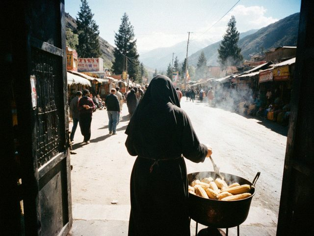

Boiled corn at the bazaar gate
27 July 2014 · Snacks

The corn woman at the Bazar-i Kalan gate. One cob 1.50 som, hot, salted. I always take two.Jügörü. In the summer the women with the big pots stand at every gate and sell boiled maize in its leaves. You walk, you eat, the grains stick in the teeth, nobody cares. The best are the late ones, September, when the grain is sweet and a little hard.
At home I boil them in salty water with a bay leaf, 40 minutes. Butter and salt. In the winter I take frozen ones from the bag in the freezer and my granddaughter says it is not the same. She is right.
♥ 149
1 comments
In Semiz we eat it with chilli, salt and lime, like at home in Mexico. Come to my shop and I will show you, the first one is free.
Comments are closed.